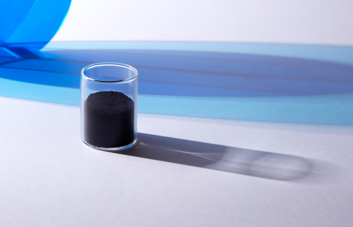

전구체
친환경 에너지를 대표하는
이차전지 산업의 핵심소재 입니다
이차전지 산업의 핵심소재 입니다

전구체(Precursor)란 어떤 화학반응을 통해 A라는 물질을 만들 때,
최종 물질인 A가 되기 바로 이전 단계의 물질을 의미합니다.
원료들을 섞은 화합물이 바로 '전구체'이고, 여기에 리튬을 더하면 비로소 양극재가 됩니다.
최종 물질인 A가 되기 바로 이전 단계의 물질을 의미합니다.
원료들을 섞은 화합물이 바로 '전구체'이고, 여기에 리튬을 더하면 비로소 양극재가 됩니다.
국산 전구체의 내재화 실현을 통해
친환경 배터리 소재산업의
경쟁력 강화에 기여
친환경 배터리 소재산업의
경쟁력 강화에 기여
높은 기술력과 공급-생산-판매로 이어지는 ValueChain을 바탕으로 국내 전구체 시장의 해외 의존도 감소를 선도하고 있으며 배터리 소재산업의 경쟁력 강화에 기여하는 핵심 소재 기업으로 성장해 나가고 있습니다.


연간 20,000톤,
재활용 6,000톤의
목표 생산량
재활용 6,000톤의
목표 생산량
한국전구체 주식회사는 켐코로부터 황산니켈을 공급받아 배터리 양극재의 전단계 물질인 NCM 전구체를 생산하며, 2023년 시운전, 2024년 양산을 목표로 생산량은 연간 20,000톤 재활용 6,000톤 규모를 확보할 예정입니다.
세계 각국의
신재생에너지 확대정책
신재생에너지 확대정책
전구체는 양극재 원가 비중의 70%, 배터리 전체 비중의 30%를 차지할 정도로 배터리 제조에 큰 비중을 차지하고 있으며, 글로벌 전기차 시장의 급성장과 세계 각국의 신재생에너지 확대정책으로 이차전지의 수요가 급증함에 따라, 이차전지 양극재 전구체시장 역시 이에 맞추어 수요가 증가할 것으로 전망되고 있습니다.

차별화된 기술경쟁력,
고도화 된 연구와 축적된 노하우
양극제 전구체의 배합은 완성된 배터리의 수명과 비용 성능을 좌우할 만큼
오랜 연구와 노하우를 필요로 합니다.
배터리용량은 높이며 비용은 절감할 수 있도록 원료의 비중을 제어하는 기술력과 더불러 최신 전구체 양산 공정을 적용하여 생산성을 높인 경쟁력있는
친환경 전구체를 공급합니다.
오랜 연구와 노하우를 필요로 합니다.
배터리용량은 높이며 비용은 절감할 수 있도록 원료의 비중을 제어하는 기술력과 더불러 최신 전구체 양산 공정을 적용하여 생산성을 높인 경쟁력있는
친환경 전구체를 공급합니다.
자체원료 공급망 구축으로
안정적인 제품 공급 및
가격 경쟁력을 확보했습니다
안정적인 제품 공급 및
가격 경쟁력을 확보했습니다
가격 상승 예상
국제에너지기구(IEA)가 지난 6월 낸 보고서의 이차전지 주요 원자재 가격 전망을 살펴보면 오는 2040년 리튬 가격은 지난해 대비 42배, 코발트 가격은 21배, 니켈은 19배, 망간은 8배 이상 늘어날 것으로 예상되고 있습니다.
자체원료 공급망 구축
전구체의 주 원료인 황산니켈을 켐코에서 직접 조달할 수 있는 한국전구체 주식회사의 경우 원재료 수급에 따르는 외부 요인에 영향을 받지 않아, 안정적으로 전구체를 만들 수 있다는 장점을 가지고 있습니다. 또한, 외부에서 원료를 수급해야하는 경쟁기업에 비해 가격 경쟁력에서 우위를 점할 수 있습니다.
전기차 배터리 주요 원자재 가격 추기
2022년 1월 4일
2022년 4월 19일